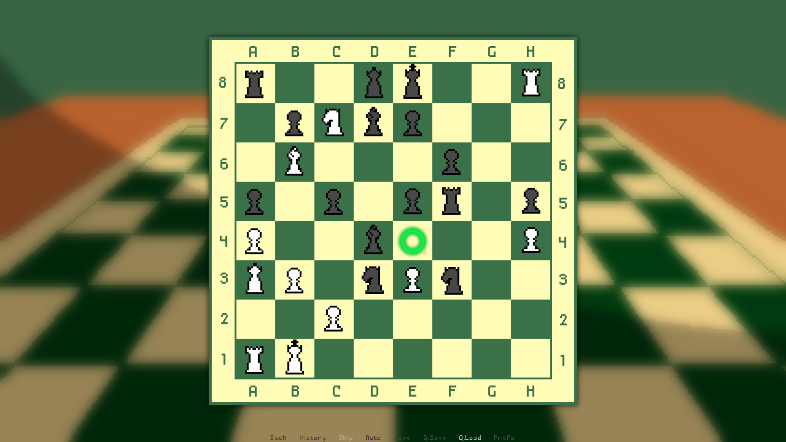
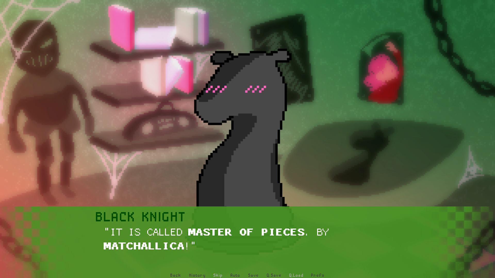

♟️ All's Fair in Love and the Board
A visual novel about CHESS, unlike any you've ever seen. The Consultants for Hectic Emergencies and Solid Solutions (CHESS) have hired you, a recent graduate from the Prestigious Academy for Wholesome Normies (PAWN). And you've been tasked with capturing your coworker's hearts!
- Wrote a narrative combining chess mechanics, corporate work culture, and meta-analysis on living bounded by rules as a pawn does on a chessboard
- Scripted a custom dialogue-choice mechanic that uses moves on a chessboard
- Coded in Ren'Py, with music composed in FL Studio, and art drawn in Clip Studio Paint

Design
This game was inspired by several things, among them: The Garden of Forking Paths by Jorge Luis Borges, the medieval theme and hierarchy inherently present in nomenclature of Chess, the experience of working a corporate 9-5, and dating sim visual novels (VN).
The first insight that led to this game's creation was a linguistic one. In game design, it is crucial to think about verbs that define the player experience. Amusingly, chess and dating sims share one essential verb: capture. In the former, you capture your target's pieces, and in the latter, you capture your target's heart. Taking the metaphor a step further, both are games of strategy. And if your strategy works, you win. To solidify this relation between chess and dating-sim strategy, certain dialogue options are presented as moves on a chessboard. A playing field and playing the field have a lot in common!

The second insight revolved around the structure of narratives. Anyone who has played a game of chess can tell you that the possibility space of a single game is vast. The Garden of Forking Paths contains a key insight of a similar nature: narratives do not need to be linear, either. This is true now more than ever; modern mediums, like video games, have been used to tell acclaimed non-linear narratives. VNs are one such type of game that features non-linearity, yet despite their branching structure, many require the player to play all routes for the true ending. Just like in a game of chess, there is always a final end.
The third insight that shaped this game was that of chess's thematic nomenclature. Inherent in how chess pieces are named and function is a clear power hierarchy, with pawns seated solidly at the bottom. It's a dramatic setting on its own: two sides, black and white, Montagues and Capulets. Can you imagine the pawn who succeeds in capturing a rook? They'd get a promotion, surely! To hammer home this hierarchy, I framed a game of chess in a setting us 21st-century folk know all about: the workplace. No pawn would want to attempt capturing a rook on their own, but if your boss demands it, and your promotion is at stake... then, so be it.

Accredation
This game was developed solely by me for CMS.618, Interactive Narrative. All of the artwork, code, writing, and music created by me! ❤️